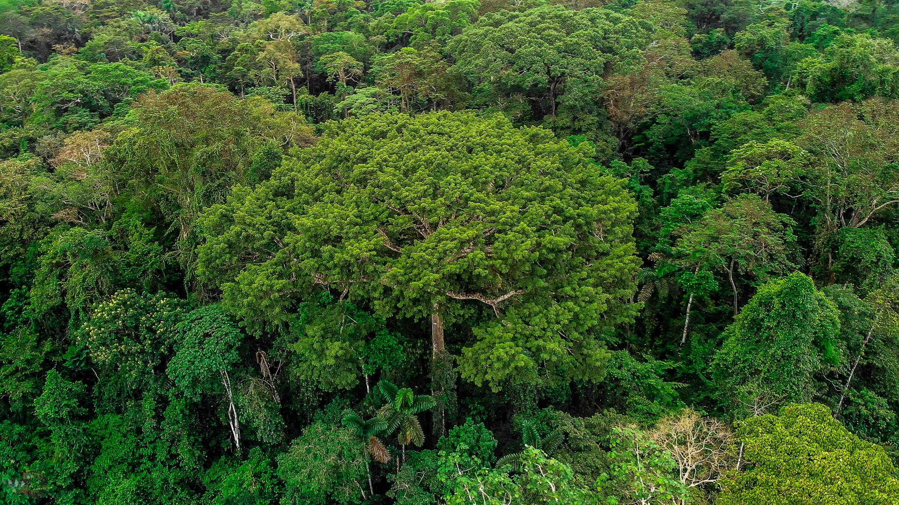
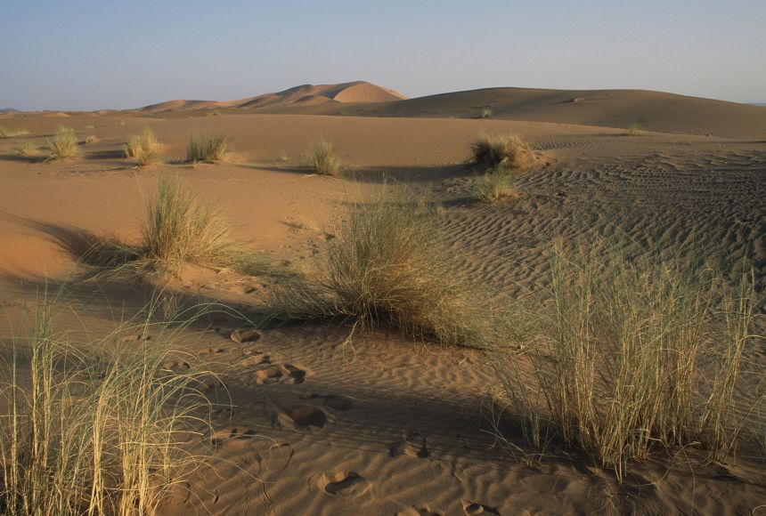
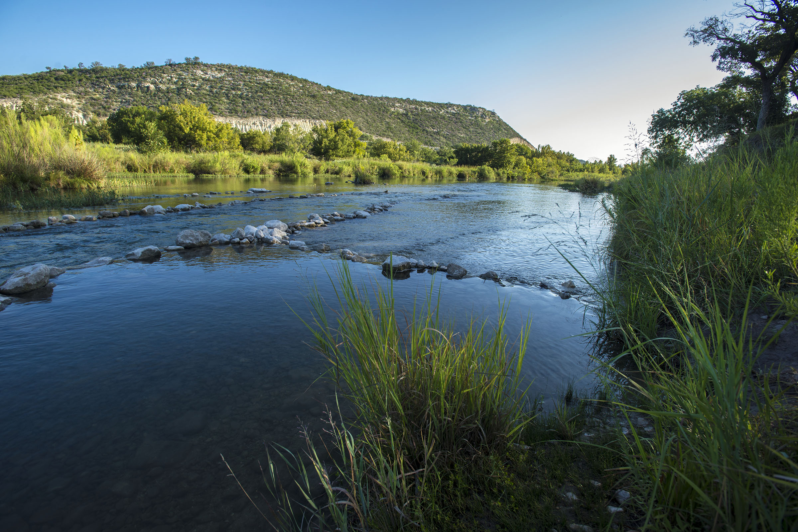

Earth
Earth is the third planet from the Sun and the only astronomical object known to harbor life. About 29.2% of Earth's surface is land with remaining 70.8% covered with water. Earth's distance from the Sun, physical properties and geological history have allowed life to evolve and thrive.
Earth's atmosphere consists mostly of nitrogen and oxygen. Earth's gravity interacts with other objects in space, especially the Sun and the Moon, Earth's only natural satellite. Earth orbits around the Sun in 365.25 days, a period known as an Earth year. During this time, Earth rotates about its axis about 366.25 times.
Earth's axis of rotation is tilted with respect to its orbital plane, producing seasons on Earth. The gravitational interaction between Earth and the Moon causes ocean tides, stabilizes Earth's orientation on its axis, and gradually slows its rotation.
Earth's Landscapes



